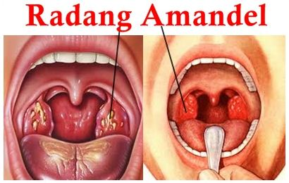
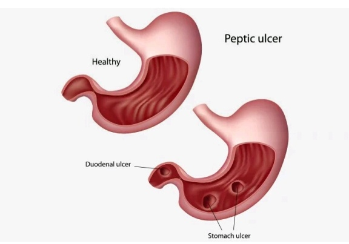
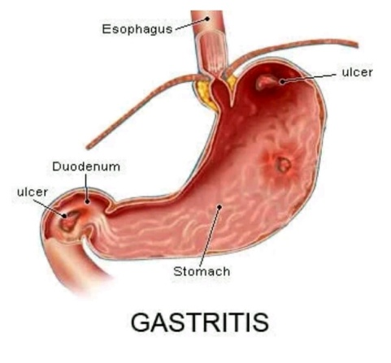
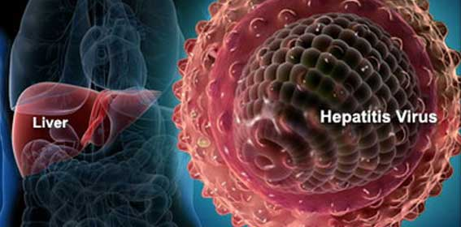
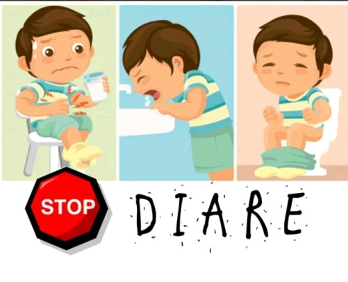
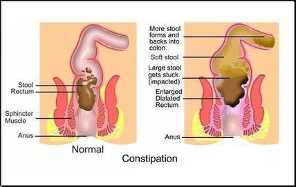
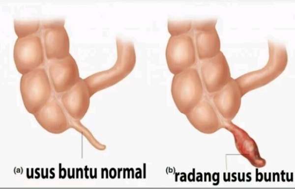
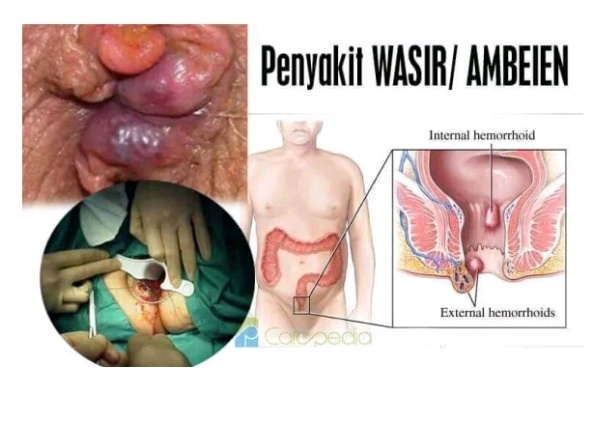
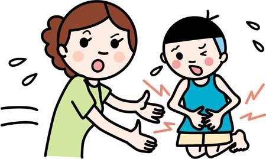

Gangguan Pada Sistem Pencernaan
Sistem pencernaan pada manusia dapat mengalami gangguan dan penyakit. Gangguan tersebut dapat diakibatkan oleh luka, infeksi virus, infeksi bakteri dan kelainan fisiologis.
Amandel
Pada percabangan kerongkongan juga sering terjadi radang yang menyebabkan kita sulit menelan akibat mengkonsumsi makanan yang tidak tepat. Hal yang lebih buruknya akan terjadi pembengkakan amandel.

Mag
Mag merupakan peradangan pada dinding lambung. Peradangan ini disebabkan oleh produksi HCL yang berlebihan sehingga mengikis dinding lambung. Mag dapat disebabkan karena pola makan yang tidak teratur.

Gastritis
Gastritis merupakan sustu peradangan akut atau kronis pada lapisan mukosa (lendir) dinding lambung. Penyebabnya ialah menderita memakan makanan yang mengandung kuman penyakit. Kemungkinan juga karena kadar asam klorida (HCL) pada lambung terlalu tinggi.

Hepatitis
Hepatitis merupakan penyakit yang terjadi akibat infeksi virus pada hati. Virus dapat masuk kedalam tubuh melalui air atau makanan.

Diare
Diare dapat terjadi karena adanya iritaasi pada selaput dinding usus besar atau kolon. Feses penderita diare berbentuk encer. Penyebabnya adalah penderita memakan makanan yang mengandung bakteri atau kuman. Akibatnya gerakan peristaltik dalam usus tidak terkontrol. Sehingga laju makanan meningkat dan usus tidak dapat menyerap air. Namun apabila feses yang dikeluarkan bercampur dengan darah dan nanah, kemudian perut terasa mulas, menunjukka adanya gejala penyakit disentri. Penyebabnya yakni infeksi bakteri Shigella pada dinding usus besar.

Konstipasi
Sembelit atau konstipasi ialah keadaan yang dialami seseorang dengan gejala feses mengeras sehingga susah dikeluarkan. Senbelit disebabkan oleh adanya penyerapan air pada sisa makanan. Akibatnya feses kekurangan air dan menjadi keras. Ini terjadi dari kebiasaan buruk yang menunda nunda buang air besar. Selain itu, juga karena kurangnya penderita mengkonsumsi makanan berserat. Oleh karena itu, banyak makan buah buahan dan sayuran berserat serta minum banyak air dapat mencegah gangguan ini.

Apendisitis
Apendisitis merupakan gangguan yang terjadi karena peradangan apendiks. Penyebabnya ialah adanya infeksi bakteri pada umbai cacing. Akibatnya timbul rasa nyeri dan sakit.

Hemeroid / Wasir / Ambeyen
Hemeroid / wasir/ ambeyen merupakan gangguan pembengkakan pada pembuluh vena disekitar anus. Orang yang sering duduk dalam beraktifitas dan ibu hamil seringkali mengalami gangguan ini.

Keracunan
Keracunan makanan dapat terjadi karena pengaruh beberapa bakteri semisal bakteri Salmonella yang menyebabkan penyakit demam tipus dan paratipus.
